Project Type
Personal
Timeline
Apr – Jun 2025
Team
3 Designers
Product Designer (Me)
Tools
Figma
ChatGPT
Miro
What I did
- Conducted research on pollen exposure, mobility behavior, and urban navigation patterns.
- Designed route guidance and visual cues to help users reduce pollen exposure while traveling.
- Prototyped and tested core navigation flows to ensure clarity, trust, and usability.
- Iterated with a small design team to refine interactions and storytelling for award submission.
Overview
Navigating the city with pollen-aware guidance
PollenNav is a pollen navigation app that provides street-level guidance for safer city travel. Unlike existing apps that only show city-wide averages, PollenNav delivers allergen-specific, location-aware insights so users can plan routes that reduce their pollen exposure in real time.
Impact
Award-winning design recognized globally
Problem
Meet Maya. Spring is stunning, until her immune system sounds the alarm.
Pollen allergies are seasonal reactions to airborne allergens, causing itchy eyes, congestion, sneezing, and coughing that can disrupt sleep, worsen asthma, and hinder daily activities. A billion people fight pollen every year.
Allergy triggers vary by person, region, and time
Different pollens peak in different states, and local climate shifts when allergy seasons begin. Grass, flower, tree, and ragweed pollens each follow distinct seasonal and geographic patterns across the country.

Research
Existing apps miss street-level triggers
Most pollen apps rely on city averages, missing street-level triggers and actionable guidance. I analyzed existing tools to understand where they fall short and why users still feel blindsided by their symptoms.
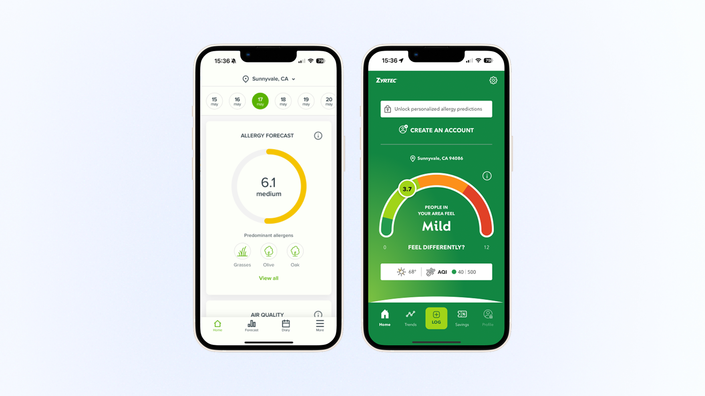
From 20 global interviews came one clear plea
"Give me allergen-specific guidance for my own street." Users across the US and China shared the same frustration: general warnings don't match their lived experience. They wanted granular, personal data they could actually act on.
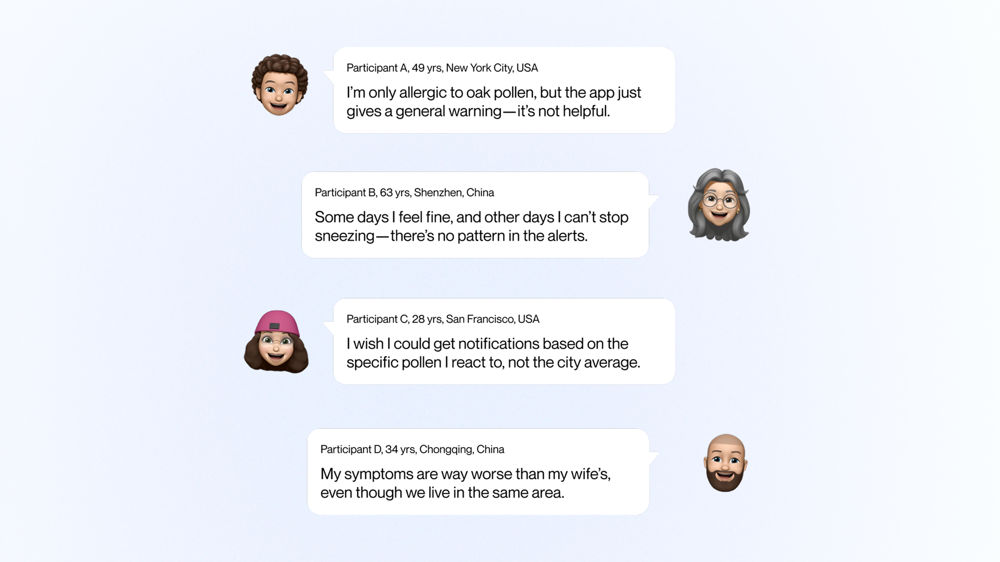
Design Goals
How might we equip people like Maya with trustworthy, street-level pollen insights they can act on?
We weren't building another symptom tracker. We designed street-level navigation that helps people plan safer routes and confidently step outside.
Our starting playbook
We combined National Weather Service data for accuracy with Waze-style community reports for freshness, creating a hybrid data model that captures both official forecasts and real-time, on-the-ground conditions.
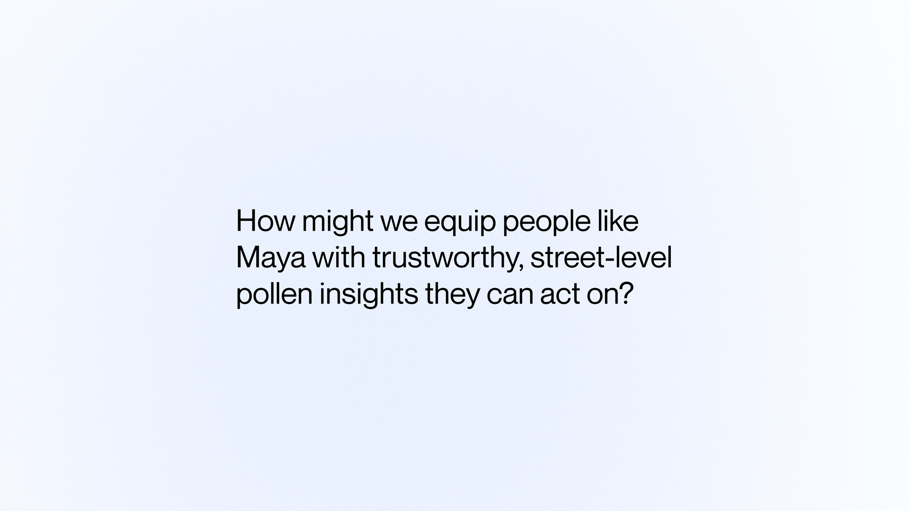
Constraints
Turns out, it's not that easy
Data Clash
National Weather Service data and community reports use different scales and formats, making it difficult to merge them into a cohesive picture.
Cognitive Overload
Pollen data is inherently complex. Showing type, severity, timing, and location without overwhelming users required careful information hierarchy.
Brand Empathy Gap
Health apps often feel clinical. We needed a visual identity that felt warm and supportive while maintaining trust and clarity.
Exploration 1
How can we present pollen data on a map clearly and cohesively?
Visualizing invisible allergens on a map without overwhelming users was the core challenge. I explored multiple approaches to balance information density with visual clarity.
Version 1: Single color with varying transparency
We used a single color with varying transparency for pollen density and sneeze counts for city reports. But differences in density were hard to see.
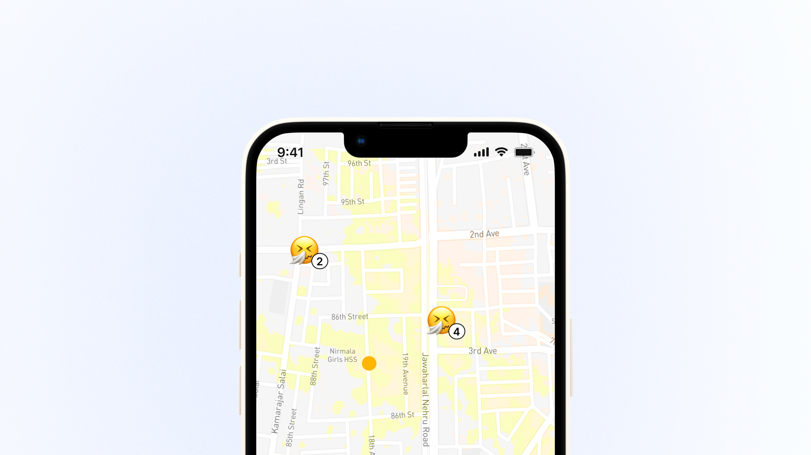
Version 2: 3D white map with color-coded trees
We used a 3D white map, marked high-pollen areas with color-coded trees, and showed community report counts. But building it required high engineering effort.
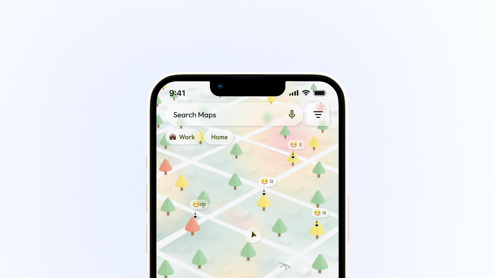
Final: 2D white map with colored fog
We used a 2D white map with red, yellow, and green fog for weather data, bubbles for community inputs, and layered roads for clarity at any zoom level.
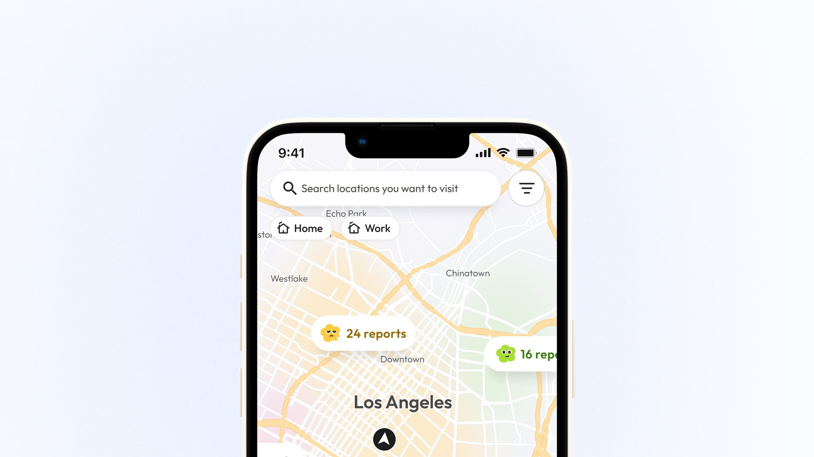
Exploration 2
How to balance comprehensive pollen information with simplicity?
Users need to stay informed without cognitive overload. I iterated on how to structure and present pollen type, severity, and timing clearly.
Version 1: Informative but hard to scan
We began with a text-heavy card layout showing pollen levels, suggestions, and types. Users liked the detail but wanted a quicker way to assess risks.

Version 2: Structured and color-coded
We added color indicators, a density bar, and grouped pollen types for clarity. But users still compared multiple numbers and missed emotional cues for urgency.

Final: Intuitive and map-aligned
In the final version, we matched the color scheme to the map and added expressive icons, letting users sense pollen risk instantly without reading numbers.

Exploration 3
How to balance consistent branding with emotional expression?
We wanted PollenNav to feel approachable, not clinical. I explored different character styles to ensure users feel supported while maintaining a clear, simple design language.
Version 1: Emojis
We used emoji icons for reactions and report counts, which were quick to read. But they lacked personality and emotional impact.
Version 2: Cloud characters
We transitioned to simple cloud shapes with personified expressions to show moods. But unclear faces reduced emotional impact.
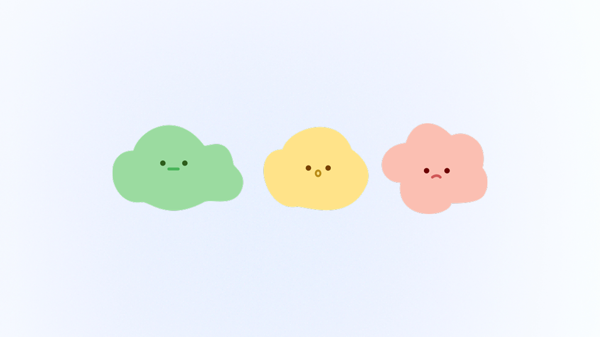
Version 3: Flower characters
We introduced flower characters with richer expressions to match our brand motif. But the colors lacked strong brand recognition, making the design less distinctive.
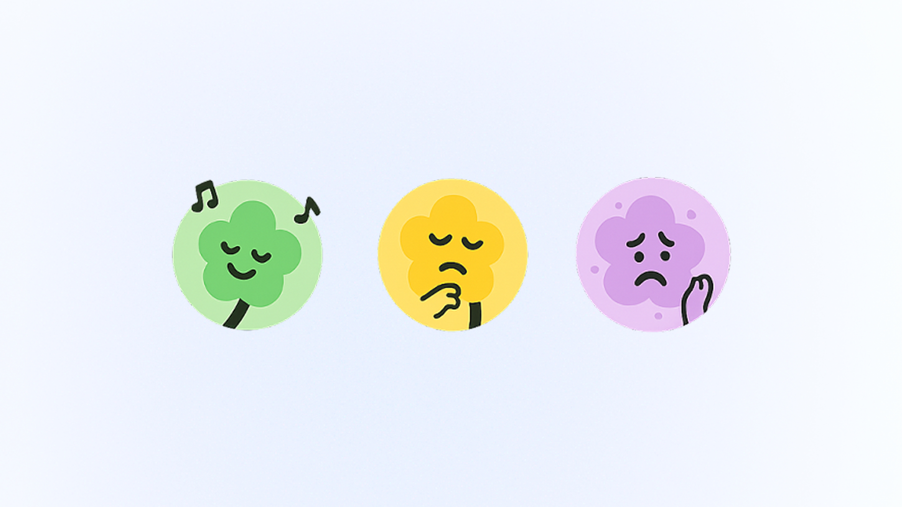
Final: Refined flower characters
We simplified and made the flowers cuter for better recognition and warmth, ensuring a consistent design language across all touchpoints.
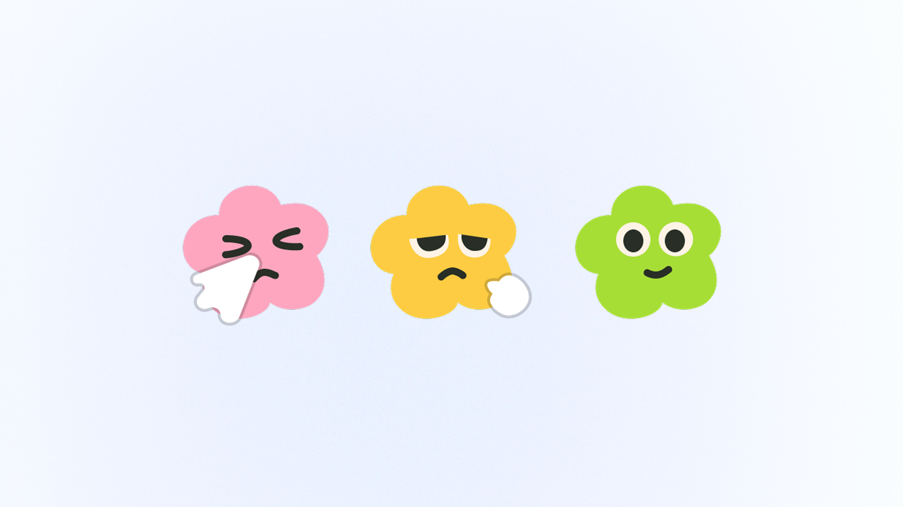
Usability Testing
Validating the experience with real users
Rounds of usability tests
Users interviewed
Increase in completion rate
After the initial design, we conducted 3 rounds of usability testing and interviewed 12 users, resulting in a 34% increase in the completion rate.
Final Deliverables
Onboarding that builds trust from day one
The onboarding flow introduces users to accurate pollen tracking, community reports, and personalized allergen settings so they feel confident before they even open the map.
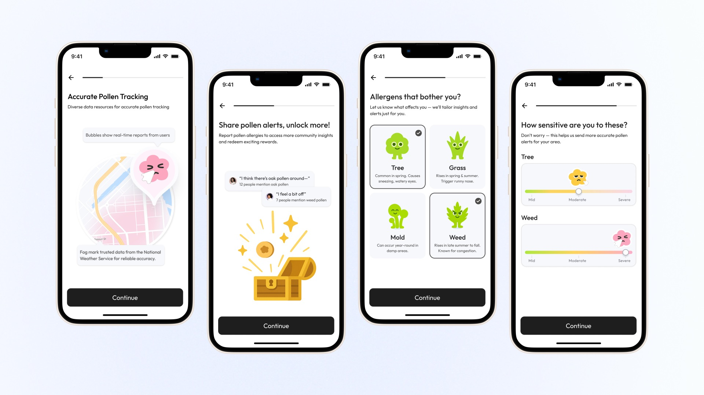
She scans the city, then zooms into her block
The map shows pollen density across cities with fog overlays, community report bubbles, and location-specific detail cards. Users can scan broadly or zoom in for street-level data.
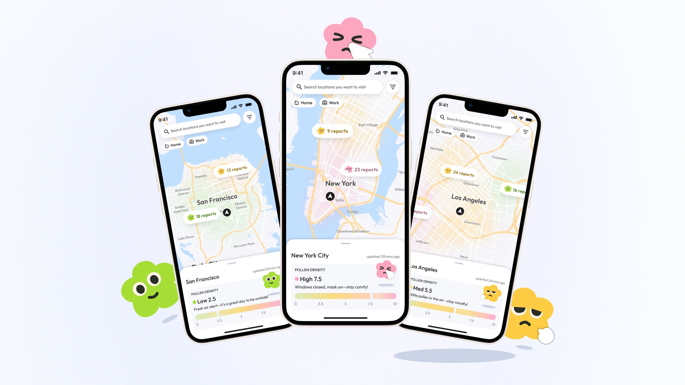
She tracks her allergens and schedules outings when levels dip
Users can view pollen forecasts by hour or week, get personalized suggestions, and read community insights to plan their day around low-pollen windows.
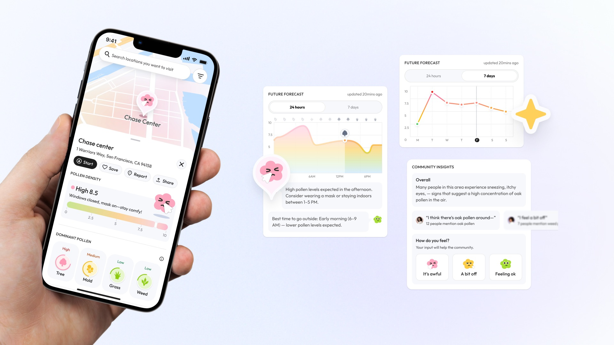
A quick glance at the mood meter tells her to head out or stay in
Expressive characters and a color-coded density bar let users sense pollen risk at a glance, with actionable advice tailored to the current level.
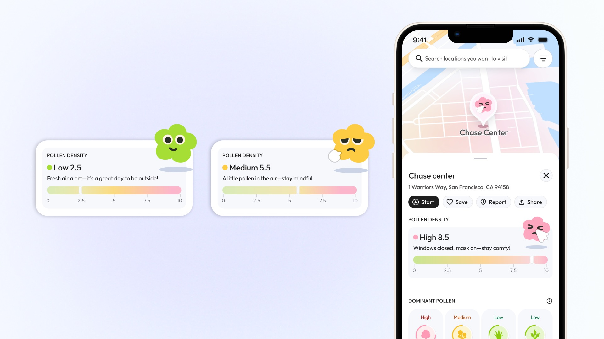
She picks a low-pollen route and detours around hotspots
PollenNav suggests low-pollen routes alongside standard shortest routes, showing pollen area counts for each option. During navigation, it alerts users to high-pollen zones ahead.
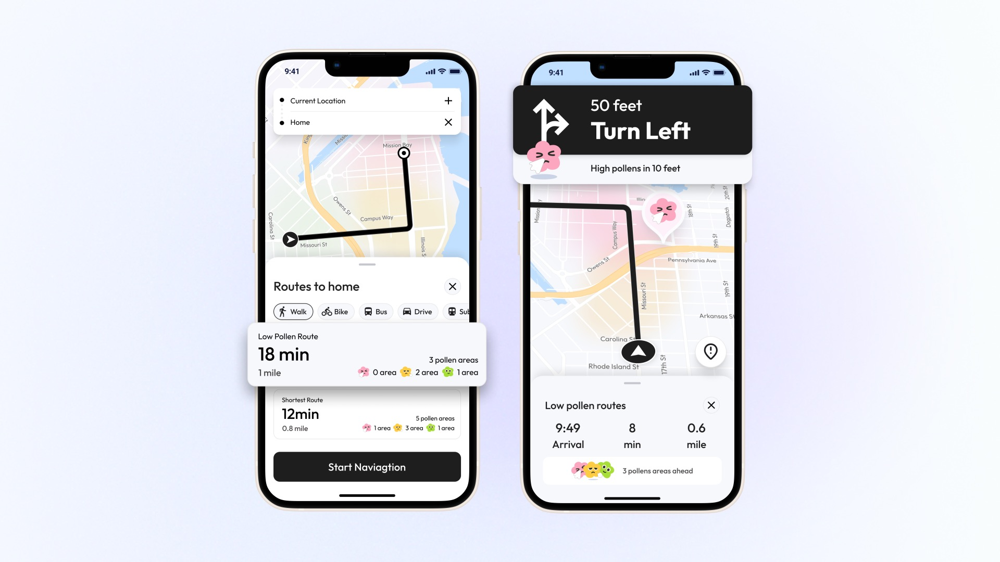
Her watch shows live counts, reroutes instantly, and logs sneezes with one tap
The Apple Watch companion displays real-time pollen levels, turn-by-turn navigation with pollen alerts, and lets users log symptoms with a single tap.
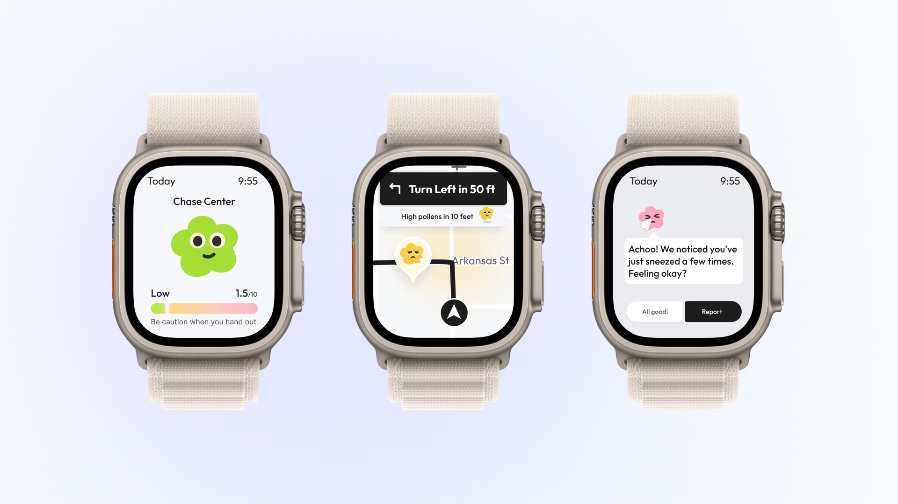
When she flags a pollen zone, the map gets better and she earns relief points
Users can report pollen conditions with mood reactions and allergen tags. Reports improve the map for everyone and earn points redeemable for allergy relief products.
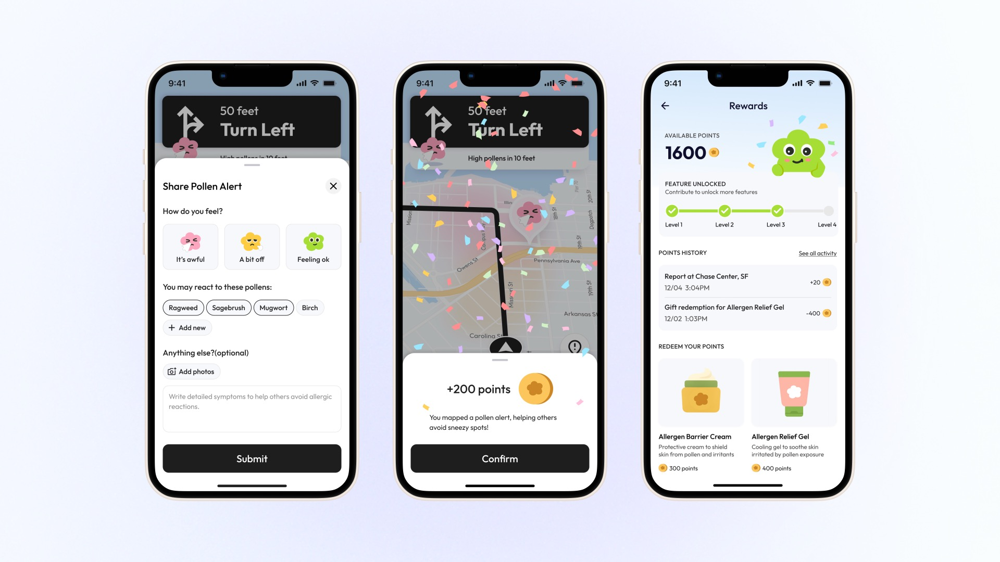
Now Maya walks freely, guided by verified street-level data
With PollenNav, Maya no longer dreads spring. She checks her block before stepping out, picks low-pollen routes to work, and schedules outdoor time around her allergens. The app turned guesswork into confidence.
Reflection
What I learned
Designing PollenNav taught me how to translate complex environmental data into something people can actually use on a daily basis. Balancing scientific accuracy with visual simplicity pushed me to iterate relentlessly on map visualizations, information hierarchy, and brand identity. Working with a small team on a tight timeline sharpened my ability to make quick design decisions while keeping the user at the center.